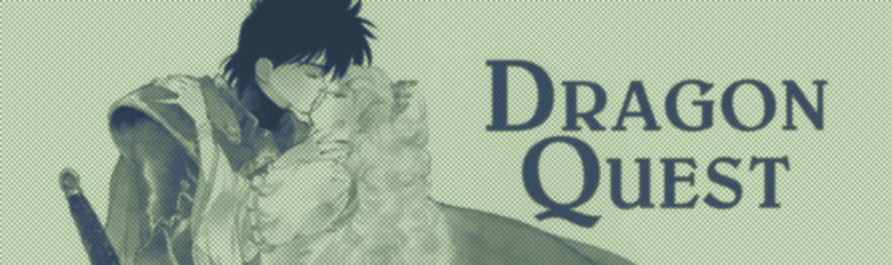

Peepaw

My friend
Written 09/12/26
Dragon Quest deserves its place in history and remains fun to play today, but unfortunate design decisions hinder it. Many were common among its contemporary, and some are hardware limitations. Despite that, I would like to explore these issues in detail rather than hand wave them as part of a bygone era.
Framework
To discuss Dragon Quest I would like to break up the game into a general timeline.
The following lists the key events in Dragon Quest in a general order with their suggested levels. The open design does allow a good portion of the events to be done in a different order, though high-level enemies will gatekeep the player. The suggested levels are estimated from guides, online playthroughs, and my experience. These suggested levels assume “even” grinding throughout the game, this was done to be more generous to the game's pacing.
- Start in Tantegel Castle: Level 1
- Go to Erdrick's Cave for Erdrick's Tablet: Suggested Level 3
- Get magic keys from Rimuldar to get the Stones of Sunlight in Tantegel Castle: Suggested Level 10
- Get the Silver Harp at Garin's grave: Suggested Level 12
- Give the old man in the shrine west of Kol the Silver Harp to get the Staff of Rain: Suggested Level 12
- Fight the Green Dragon in the Swamp Cave and receive Gwalin's Love: Suggested Level 12
- Get Erdrick's Armor from Haukness: Suggested Level 15
- Get Erdrick's Tolken from South Cantlin: Suggested Level 15
- Trade key items on the Southern Island for the Rainbow Drop: Suggested Level 15
- Fight the final Boss in Charlock Castle: Suggested Level 19
The “early game” will be level 1 to level 12, finishing at the Green Dragon, which could be considered as the mid game boss.
The “mid game” will be level 12 to level 15, ending just before the final boss.
The “end game” will be level 15 to level 19, finishing at the end of the game.
Gameplay
“Open world” is often used in our current time to showcase the power of modern gaming. One could argue that Dragon Quest's open design was forward thinking, and it is, but for RPGs in the NES era the open design helps restrict the number of variables that are needed to keep track of. Dragon Quest can keep the player on a mostly linear track through enemy placement, so it is not entirely open, but these specifics don't detract that Dragon Quest was doing something distinct.
Dragon Quest does an adequate job of guiding the player. Some items are in eccentric places, but for the most part the player is given strong direction by the NPCs. The map layout is good, though it is small and explored relatively quickly compared to the overall playtime. I did enjoy the game's use of bridges to signal new areas with higher enemy levels, the visual indication is clever without being distracting or overally apparent.
| Level | EXP on level up | EXP For Next Level |
|---|---|---|
| 1 | 0 | 7 |
| 2 | 7 | 16 |
| 3 | 23 | 24 |
| 4 | 47 | 63 |
| 5 | 110 | 110 |
| 6 | 220 | 230 |
| 7 | 450 | 350 |
| 8 | 800 | 500 |
| 9 | 1300 | 700 |
| 10 | 2000 | 900 |
| Level | EXP on level up | EXP For Next Level |
|---|---|---|
| 11 | 2900 | 1100 |
| 12 | 4000 | 1500 |
| 13 | 5500 | 2000 |
| 14 | 7500 | 2500 |
| 15 | 10000 | 3000 |
| 16 | 13000 | 3000 |
| 17 | 16000 | 3000 |
| 18 | 19000 | 3000 |
| 19 | 22000 | 4000 |
| 20 | 26000 | 4000 |
| Level | EXP on level up | EXP For Next Level |
|---|---|---|
| 21 | 30000 | 4000 |
| 22 | 34000 | 4000 |
| 23 | 38000 | 4000 |
| 24 | 42000 | 4000 |
| 25 | 46000 | 4000 |
| 26 | 50000 | 4000 |
| 27 | 54000 | 4000 |
| 28 | 58000 | 4000 |
| 29 | 62000 | 3535 |
| 30 | 65535 | N/A |
Nearly every issue with Dragon Quest can be sourced to its tepid pace. The earlier provided suggested levels will vary player-to-player, but it is arduous to finish the game before level 19. That means that at minimum the player will have to collect 26000 EXP over their playtime. Using the previously defined segments, 15% of the total EXP is collected in the early game (4000/26000), 35% in the mid game ((13000-4000)/26000), and 50% in the late game ((26000-13000)/26000).
Gameplay is not a science; these are estimates. Grinding in Dragon Quest is a time-consuming and deliberate process. Some players will get bored and push on ahead, meaning they will have a lengthier late game. Others will level up more consistently throughout the game, meaning they will have a longer mid game. In either of these cases, most of the playtime will be spent in a game where 80-90% of the map has already been explored.
The EXP breakdown is not troubling on sight and most games operate on a similar level, but Dragon Quest's enemies do not smooth out the experience curve.
Early Game Enemies
| Enemy | EXP Awarded |
|---|---|
| Slime | 1 |
| Red Slime | 1 |
| Drakee | 2 |
| Ghost | 3 |
| Magician | 4 |
| Magidrakee | 5 |
| Golem | 5 |
| Scorpion | 6 |
| Goldman | 6 |
| Druin | 7 |
| Poltergeist | 8 |
| Droll | 10 |
| Drakeema | 11 |
| Skeleton | 11 |
| Warlock | 13 |
| Metal Scorpion | 14 |
| Wolf | 16 |
Mid Game Enemies
| Enemy | EXP Awarded |
|---|---|
| Wraith | 17 |
| Specter | 18 |
| Druinlord | 20 |
| Wolflord | 20 |
| Drollmagi | 22 |
| Wyvern | 24 |
| Rogue Scorpion | 26 |
| Wraith Knight | 28 |
| Knight | 33 |
| Magiwyvern | 34 |
| Demon Knight | 37 |
Late Game Enemies
| Enemy | EXP Awarded |
|---|---|
| Werewolf | 40 |
| Starwyvern | 43 |
| Green Dragon | 45 |
| Wizard | 50 |
| Axe Knight | 54 |
| Blue Dragon | 60 |
| Stoneman | 65 |
| Armored Knight | 70 |
| Red Dragon | 100 |
| Metal Slime | 115 |
In all games, the amount of EXP needed for each level increases as the player progresses, but the player is rewarded with high EXP enemies. In Dragon Quest, the most EXP the player will ever be rewarded is 115, and that's from a late game enemy with a high evasion and low encounter rate. It is also worth noting that multiple enemies cannot be fought at once, you cannot fight multiple high level enemies to get a higher EXP gain.
The previous table breaks down all the enemies in the game into the different segments of the game. These segments are not exact in the slightest, but they paint a decent picture of which enemies are fought during each section of the game. A daring player, and especially one willing to use save states, can fight higher-level enemies at a lower level.
By the end of the mid game, the player has explored nearly every part of the Dragon Quest map and has seen nearly all enemies, but the player still has to keep playing for quite a bit to level up enough for the final fight. 13000 EXP is needed to get from level 15 to level 19.
For levels 15-16, enemies high on the late game table are difficult to fight, so the player will probably stick with easier enemies. I would guess that the best possible enemy to fight at this point is the Axe Knight, rewarding 54 EXP, the player will have to fight around 55 of these enemies to level up. After which, they could likely fight the Red Dragon that provides 100 EXP. It takes 6000 EXP to reach level 19, 6000/100 = 60. That's an estimated 115 fights to get to level 19. Again, this is not an exact science these are only estimates.
It is harder to guess what fights the player is doing during the mid game, but I would assume that more than 150 fights would be needed to go from level 12 to level 15. The mid game has the benefit of exploration, though. As detailed, these 115 are done at the absolute end of Dragon Quest, at this point, all elements of the game have dulled from exposure.
The battle screen looks great, arguably Dragon Quest's battles look better than an other Final Fantasy and Dragon Quest game on the NES. The shift to first person is cool and the sprite work is cute, but the mechanics are simplistic. Strong aesthetics do not remedy the stale mechanics, though. Most fights are spent pressing the attack button with minor variation or strategy.
Dying in Dragon Quest will only lose the player money, which can be punishing when the player is saving up for equipment, but it is very forgiving. Dying does return the player back to Tantegel Castle, which is another problem with Dragon Quest's pacing.
The only checkpoint in the game is at Tantegel Castle. The overall grind experience creates a nasty cycle where the player will try to speed up the process by fighting higher level enemies, die, and have to work their way back to the difficult enemies from Tantegel. While making progress back, the player will run into enemies, even if they have leveled up enough to have a repel spell, that might as well be offering 0 EXP. Though the issues with a singular checkpoint are obviously more surface level than that.
Personally, playing Dragon Quest emphasized the importance of boss battles to me. The only boss in Dragon Quest is the final boss, arguably there are maybe some other bosses: the Green Dragon in the Swamp Cave, and the Axe Knight in Haukness, but these “bosses” are just standard enemies.
There are many different ways to play an RPG. Some players may take the time to properly level up so all bosses will be fought without too much struggle, while others may take more chances and fight at a lower level but strategize more. The EXP rewarded by bosses offers the second kind of player an EXP boost to get closer to the former. There being no bosses in Dragon Quest means that there is no way to take chances and fight bosses at earlier levels to avoid grinding on standard enemies.
Dragon Quest takes a long time to play, and it is a very unrewarding experience. Pleasure is at the core of a positive gameplay experience, and that pleasure can be condensed into numbers increasing and new stimuli.
Numbers that benefit the player are crushingly small. The amount of EXP needed to level up quickly reaches the thousands, but enemies only ever offer a fraction of that. Even on level up, the damage output provided only goes up by a small amount.
As detailed repeatedly, for a good portion of players, most of the game will be spent grinding levels in the final castle. The only new things the player will experience are spells, and those are far and few between.
The simplest way to “fix” Dragon Quest would be to speed up the leveling, but games were sluggish on a base level in the NES era. A slightly shorter level up experience with bigger numbers could at least serve to make the game more exciting, but it is hard to store large numbers on the NES. It takes 4000 EXP to go up a single level from levels 19 to 29, but it takes only 3535 EXP to go from level 29 to 30, this is because 3535 EXP will bring the player to 65535, and a singular EXP point will lead to an int overflow.
Conclusion
I did very little early and mid game grinding in Dragon Quest, I was in the final dungeon by level 13, and I was at the final boss by level 14. This was my second time playing Dragon Quest, the first time I played I turned on a couple of cheats to make the experience quicker. I wanted to play truthfully this time, but after waiting hours to fight a single enemy and finish the game, I had to admit I was having no fun and just wanted the game to be over.
Since my first playthrough I have played The Portopia Serial Murder Case, and I do prefer Portopia to Dragon Quest, but it is fun seeing how it influenced Dragon Quest.
Dragon Quest is, markedly, of its era. It is enjoyable and easy to see everything it has to offer, but it is dreadful to push through the finish line.